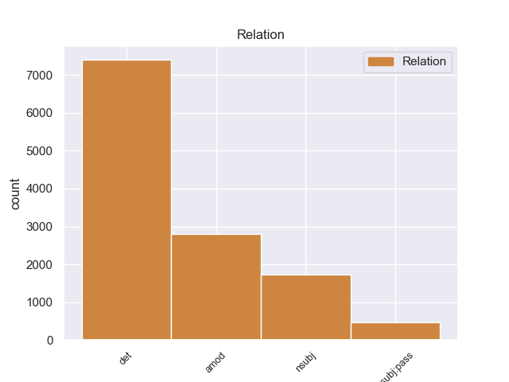
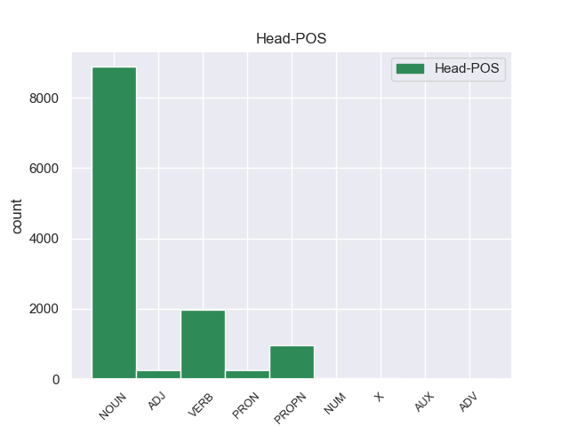
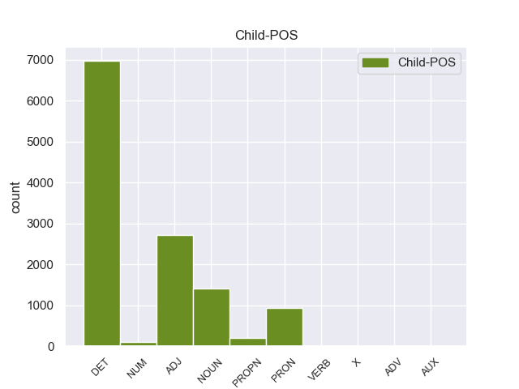

Distribution of features within this leaf



Agreement Rules sorted by frequency.
- When the dependent token is the determiner(det) of the head token,
1 Αυτό _ _ _ _ 0 _ _ _
2 μπορεί _ _ _ _ 0 _ _ _
3 να _ _ _ _ 0 _ _ _
4 μην _ _ _ _ 0 _ _ _
5 οδηγήσει _ _ _ _ 0 _ _ _
6 σ _ _ _ _ 0 _ _ _
7 τη _ _ _ _ 0 _ _ _
8 λήξη _ _ _ _ 0 _ _ _
9 του _ _ _ _ 0 _ _ _
10 εν _ _ _ _ 0 _ _ _
11 λόγω _ _ _ _ 0 _ _ _
12 ζητήματος _ _ _ _ 0 _ _ _
13 αλλά _ _ _ _ 0 _ _ _
14 , _ _ _ _ 0 _ _ _
15 σ _ _ _ _ 0 _ _ _
16 τη _ _ _ _ 0 _ _ _
17 μορφή _ _ _ _ 0 _ _ _
18 υπό _ _ _ _ 0 _ _ _
19 την _ _ _ _ 0 _ _ _
20 οποία _ _ _ _ 0 _ _ _
21 την _ _ _ _ 0 _ _ _
22 λάβαμε _ _ _ _ 0 _ _ _
23 , _ _ _ _ 0 _ _ _
24 αυτή _ _ _ _ 0 _ _ _
25 η _ _ _ _ 0 _ _ _
26 αίτηση _ _ _ _ 0 _ _ _
27 άρσης _ _ _ _ 0 _ _ _
28 της _ _ _ _ 0 _ _ _
29 ασυλίας _ _ _ _ 0 _ _ _
30 ήταν _ _ _ _ 0 _ _ _
31 , _ _ _ _ 0 _ _ _
32 κατά _ _ _ _ 0 _ _ _
33 την _ _ _ _ 0 _ _ _
34 άποψη _ _ _ _ 0 _ _ _
35 της _ _ _ _ 0 _ _ _
36 Επιτροπής _ _ _ _ 0 _ _ _
37 Νομικών _ _ _ _ 0 _ _ _
38 Θεμάτων _ _ _ _ 0 _ _ _
39 , _ _ _ _ 0 _ _ _
40 απαράδεκτη _ _ _ _ 0 _ _ _
41 , _ _ _ _ 0 _ _ _
42 άποψη _ _ _ _ 0 _ _ _
43 την _ _ _ _ 0 _ _ _
44 οποία _ _ _ _ 0 _ _ _
45 συνιστώ _ _ _ _ 0 _ _ _
46 σ _ _ _ _ 0 _ _ _
47 το ο DET _ Case=Acc|Gender=Neut|Number=Sing 48 det _ _
48 Σώμα σώμα NOUN _ Case=Acc|Gender=Neut|Number=Sing 0 _ _ _
49 να _ _ _ _ 0 _ _ _
50 υιοθετήσει _ _ _ _ 0 _ _ _
51 . _ _ _ _ 0 _ _ _
1 Αυτό _ _ _ _ 0 _ _ _
2 μπορεί _ _ _ _ 0 _ _ _
3 να _ _ _ _ 0 _ _ _
4 μην _ _ _ _ 0 _ _ _
5 οδηγήσει _ _ _ _ 0 _ _ _
6 σ _ _ _ _ 0 _ _ _
7 τη _ _ _ _ 0 _ _ _
8 λήξη _ _ _ _ 0 _ _ _
9 του _ _ _ _ 0 _ _ _
10 εν _ _ _ _ 0 _ _ _
11 λόγω _ _ _ _ 0 _ _ _
12 ζητήματος _ _ _ _ 0 _ _ _
13 αλλά _ _ _ _ 0 _ _ _
14 , _ _ _ _ 0 _ _ _
15 σ _ _ _ _ 0 _ _ _
16 τη _ _ _ _ 0 _ _ _
17 μορφή _ _ _ _ 0 _ _ _
18 υπό _ _ _ _ 0 _ _ _
19 την _ _ _ _ 0 _ _ _
20 οποία _ _ _ _ 0 _ _ _
21 την _ _ _ _ 0 _ _ _
22 λάβαμε _ _ _ _ 0 _ _ _
23 , _ _ _ _ 0 _ _ _
24 αυτή _ _ _ _ 0 _ _ _
25 η _ _ _ _ 0 _ _ _
26 αίτηση _ _ _ _ 0 _ _ _
27 άρσης _ _ _ _ 0 _ _ _
28 της _ _ _ _ 0 _ _ _
29 ασυλίας _ _ _ _ 0 _ _ _
30 ήταν _ _ _ _ 0 _ _ _
31 , _ _ _ _ 0 _ _ _
32 κατά _ _ _ _ 0 _ _ _
33 την _ _ _ _ 0 _ _ _
34 άποψη _ _ _ _ 0 _ _ _
35 της _ _ _ _ 0 _ _ _
36 Επιτροπής _ _ _ _ 0 _ _ _
37 Νομικών _ _ _ _ 0 _ _ _
38 Θεμάτων _ _ _ _ 0 _ _ _
39 , _ _ _ _ 0 _ _ _
40 απαράδεκτη απαράδεκτος ADJ _ Case=Nom|Gender=Fem|Number=Sing 42 amod _ _
41 , _ _ _ _ 0 _ _ _
42 άποψη άποψη NOUN _ Case=Nom|Gender=Fem|Number=Sing 0 _ _ _
43 την _ _ _ _ 0 _ _ _
44 οποία _ _ _ _ 0 _ _ _
45 συνιστώ _ _ _ _ 0 _ _ _
46 σ _ _ _ _ 0 _ _ _
47 το _ _ _ _ 0 _ _ _
48 Σώμα _ _ _ _ 0 _ _ _
49 να _ _ _ _ 0 _ _ _
50 υιοθετήσει _ _ _ _ 0 _ _ _
51 . _ _ _ _ 0 _ _ _
1 Αυτό _ _ _ _ 0 _ _ _
2 μπορεί μπορώ VERB _ Aspect=Imp|Mood=Ind|Number=Sing|Person=3|Tense=Pres|VerbForm=Fin|Voice=Act 0 _ _ _
3 να _ _ _ _ 0 _ _ _
4 μην _ _ _ _ 0 _ _ _
5 οδηγήσει _ _ _ _ 0 _ _ _
6 σ _ _ _ _ 0 _ _ _
7 τη _ _ _ _ 0 _ _ _
8 λήξη _ _ _ _ 0 _ _ _
9 του _ _ _ _ 0 _ _ _
10 εν _ _ _ _ 0 _ _ _
11 λόγω _ _ _ _ 0 _ _ _
12 ζητήματος _ _ _ _ 0 _ _ _
13 αλλά _ _ _ _ 0 _ _ _
14 , _ _ _ _ 0 _ _ _
15 σ _ _ _ _ 0 _ _ _
16 τη _ _ _ _ 0 _ _ _
17 μορφή _ _ _ _ 0 _ _ _
18 υπό _ _ _ _ 0 _ _ _
19 την _ _ _ _ 0 _ _ _
20 οποία _ _ _ _ 0 _ _ _
21 την _ _ _ _ 0 _ _ _
22 λάβαμε _ _ _ _ 0 _ _ _
23 , _ _ _ _ 0 _ _ _
24 αυτή _ _ _ _ 0 _ _ _
25 η _ _ _ _ 0 _ _ _
26 αίτηση αίτηση NOUN _ Case=Nom|Gender=Fem|Number=Sing 2 nsubj _ _
27 άρσης _ _ _ _ 0 _ _ _
28 της _ _ _ _ 0 _ _ _
29 ασυλίας _ _ _ _ 0 _ _ _
30 ήταν _ _ _ _ 0 _ _ _
31 , _ _ _ _ 0 _ _ _
32 κατά _ _ _ _ 0 _ _ _
33 την _ _ _ _ 0 _ _ _
34 άποψη _ _ _ _ 0 _ _ _
35 της _ _ _ _ 0 _ _ _
36 Επιτροπής _ _ _ _ 0 _ _ _
37 Νομικών _ _ _ _ 0 _ _ _
38 Θεμάτων _ _ _ _ 0 _ _ _
39 , _ _ _ _ 0 _ _ _
40 απαράδεκτη _ _ _ _ 0 _ _ _
41 , _ _ _ _ 0 _ _ _
42 άποψη _ _ _ _ 0 _ _ _
43 την _ _ _ _ 0 _ _ _
44 οποία _ _ _ _ 0 _ _ _
45 συνιστώ _ _ _ _ 0 _ _ _
46 σ _ _ _ _ 0 _ _ _
47 το _ _ _ _ 0 _ _ _
48 Σώμα _ _ _ _ 0 _ _ _
49 να _ _ _ _ 0 _ _ _
50 υιοθετήσει _ _ _ _ 0 _ _ _
51 . _ _ _ _ 0 _ _ _
1 πρόκειται _ _ _ _ 0 _ _ _
2 για _ _ _ _ 0 _ _ _
3 αυτό _ _ _ _ 0 _ _ _
4 το _ _ _ _ 0 _ _ _
5 οποίο _ _ _ _ 0 _ _ _
6 αποκαλύφθηκε _ _ _ _ 0 _ _ _
7 κατά _ _ _ _ 0 _ _ _
8 τη _ _ _ _ 0 _ _ _
9 διάρκεια _ _ _ _ 0 _ _ _
10 αυτής _ _ _ _ 0 _ _ _
11 της _ _ _ _ 0 _ _ _
12 διαδικασίας _ _ _ _ 0 _ _ _
13 , _ _ _ _ 0 _ _ _
14 ότι _ _ _ _ 0 _ _ _
15 ο _ _ _ _ 0 _ _ _
16 Εισαγγελέας _ _ _ _ 0 _ _ _
17 κάποια _ _ _ _ 0 _ _ _
18 στιγμή _ _ _ _ 0 _ _ _
19 ζήτησε _ _ _ _ 0 _ _ _
20 από _ _ _ _ 0 _ _ _
21 την _ _ _ _ 0 _ _ _
22 Πρόεδρο _ _ _ _ 0 _ _ _
23 του _ _ _ _ 0 _ _ _
24 Σώματος _ _ _ _ 0 _ _ _
25 , _ _ _ _ 0 _ _ _
26 την _ _ _ _ 0 _ _ _
27 προκάτοχό _ _ _ _ 0 _ _ _
28 σας _ _ _ _ 0 _ _ _
29 , _ _ _ _ 0 _ _ _
30 λεπτομέρειες _ _ _ _ 0 _ _ _
31 για _ _ _ _ 0 _ _ _
32 την _ _ _ _ 0 _ _ _
33 ψήφο _ _ _ _ 0 _ _ _
34 που _ _ _ _ 0 _ _ _
35 έχουν _ _ _ _ 0 _ _ _
36 δώσει _ _ _ _ 0 _ _ _
37 οι _ _ _ _ 0 _ _ _
38 δύο _ _ _ _ 0 _ _ _
39 συγκεκριμένοι _ _ _ _ 0 _ _ _
40 βουλευτές _ _ _ _ 0 _ _ _
41 προκειμένου _ _ _ _ 0 _ _ _
42 να _ _ _ _ 0 _ _ _
43 διευκρινιστεί διευκρινιώ VERB _ Aspect=Perf|Mood=Ind|Number=Sing|Person=3|VerbForm=Fin|Voice=Pass 0 _ _ _
44 περαιτέρω _ _ _ _ 0 _ _ _
45 η _ _ _ _ 0 _ _ _
46 πιθανότητα πιθανότητα NOUN _ Case=Nom|Gender=Fem|Number=Sing 43 nsubj:pass _ _
47 να _ _ _ _ 0 _ _ _
48 είχαν _ _ _ _ 0 _ _ _
49 ασκήσει _ _ _ _ 0 _ _ _
50 αθέμιτη _ _ _ _ 0 _ _ _
51 επιρροή _ _ _ _ 0 _ _ _
52 . _ _ _ _ 0 _ _ _
Disagree Examples:
1 Αυξάνεται _ _ _ _ 0 _ _ _
2 συνεχώς _ _ _ _ 0 _ _ _
3 ο _ _ _ _ 0 _ _ _
4 αριθμός αριθμός NOUN NOUN Case=Nom|Gender=Masc|Number=Sing 0 _ _ _
5 των _ _ _ _ 0 _ _ _
6 νεόπτωχων νεόπτωχος ADJ ADJ Case=Gen|Gender=Masc|Number=Plur 4 amod _ _
7 σ _ _ _ _ 0 _ _ _
8 την _ _ _ _ 0 _ _ _
9 Ευρώπη _ _ _ _ 0 _ _ _
10 . _ _ _ _ 0 _ _ _
1 Ασφαλώς _ _ _ _ 0 _ _ _
2 , _ _ _ _ 0 _ _ _
3 η _ _ _ _ 0 _ _ _
4 συνόψιση συνόψιση NOUN NOUN Case=Nom|Gender=Fem|Number=Sing 16 nsubj _ _
5 των _ _ _ _ 0 _ _ _
6 μέχρι _ _ _ _ 0 _ _ _
7 τώρα _ _ _ _ 0 _ _ _
8 οδηγιών _ _ _ _ 0 _ _ _
9 , _ _ _ _ 0 _ _ _
10 η _ _ _ _ 0 _ _ _
11 εναρμόνιση _ _ _ _ 0 _ _ _
12 και _ _ _ _ 0 _ _ _
13 ο _ _ _ _ 0 _ _ _
14 εκσυγχρονισμός _ _ _ _ 0 _ _ _
15 τους _ _ _ _ 0 _ _ _
16 αποτελούν αποτελώ VERB VERB Aspect=Imp|Mood=Ind|Number=Plur|Person=3|Tense=Pres|VerbForm=Fin|Voice=Act 0 _ _ _
17 ένα _ _ _ _ 0 _ _ _
18 πολύ _ _ _ _ 0 _ _ _
19 ουσιαστικό _ _ _ _ 0 _ _ _
20 βήμα _ _ _ _ 0 _ _ _
21 . _ _ _ _ 0 _ _ _
1 Ο _ _ _ _ 0 _ _ _
2 αμερικανός _ _ _ _ 0 _ _ _
3 Υπουργός _ _ _ _ 0 _ _ _
4 Οικονομικών _ _ _ _ 0 _ _ _
5 , _ _ _ _ 0 _ _ _
6 Τζακ _ _ _ _ 0 _ _ _
7 Λιου _ _ _ _ 0 _ _ _
8 , _ _ _ _ 0 _ _ _
9 δήλωσε _ _ _ _ 0 _ _ _
10 ότι _ _ _ _ 0 _ _ _
11 οι _ _ _ _ 0 _ _ _
12 οικονομικές _ _ _ _ 0 _ _ _
13 κυρώσεις κύρωση NOUN NOUN Case=Nom|Gender=Fem|Number=Plur 21 nsubj _ _
14 σε _ _ _ _ 0 _ _ _
15 βάρος _ _ _ _ 0 _ _ _
16 της _ _ _ _ 0 _ _ _
17 Μόσχας _ _ _ _ 0 _ _ _
18 έχουν _ _ _ _ 0 _ _ _
19 ήδη _ _ _ _ 0 _ _ _
20 " _ _ _ _ 0 _ _ _
21 πλήξει πλήττω VERB VERB Aspect=Perf|Mood=Ind|Number=Sing|Person=3|VerbForm=Fin|Voice=Act 0 _ _ _
22 σημαντικά _ _ _ _ 0 _ _ _
23 " _ _ _ _ 0 _ _ _
24 τη _ _ _ _ 0 _ _ _
25 ρωσική _ _ _ _ 0 _ _ _
26 οικονομία _ _ _ _ 0 _ _ _
27 . _ _ _ _ 0 _ _ _
1 η _ _ _ _ 0 _ _ _
2 οικονομική _ _ _ _ 0 _ _ _
3 κατάσταση κατάσταση NOUN NOUN Case=Nom|Gender=Fem|Number=Sing 10 nsubj _ _
4 και _ _ _ _ 0 _ _ _
5 οι _ _ _ _ 0 _ _ _
6 συνθήκες _ _ _ _ 0 _ _ _
7 ζωής _ _ _ _ 0 _ _ _
8 των _ _ _ _ 0 _ _ _
9 πολιτών _ _ _ _ 0 _ _ _
10 γίνονται γίνομαι VERB VERB Aspect=Imp|Mood=Ind|Number=Plur|Person=3|Tense=Pres|VerbForm=Fin|Voice=Pass 0 _ _ _
11 όλο _ _ _ _ 0 _ _ _
12 και _ _ _ _ 0 _ _ _
13 πιο _ _ _ _ 0 _ _ _
14 επαχθείς _ _ _ _ 0 _ _ _
15 . _ _ _ _ 0 _ _ _
1 Όλα _ _ _ _ 0 _ _ _
2 αυτά αυτός PRON PRON Case=Nom|Gender=Neut|Number=Plur|Person=3|PronType=Dem 8 nsubj _ _
3 πρέπει _ _ _ _ 0 _ _ _
4 να _ _ _ _ 0 _ _ _
5 είναι _ _ _ _ 0 _ _ _
6 η _ _ _ _ 0 _ _ _
7 αναγκαία _ _ _ _ 0 _ _ _
8 προϋπόθεση προϋπόθεση NOUN NOUN Case=Nom|Gender=Fem|Number=Sing 0 _ _ _
9 για _ _ _ _ 0 _ _ _
10 την _ _ _ _ 0 _ _ _
11 επανέναρξη _ _ _ _ 0 _ _ _
12 , _ _ _ _ 0 _ _ _
13 εκ _ _ _ _ 0 _ _ _
14 μέρους _ _ _ _ 0 _ _ _
15 της _ _ _ _ 0 _ _ _
16 Ένωσης _ _ _ _ 0 _ _ _
17 , _ _ _ _ 0 _ _ _
18 των _ _ _ _ 0 _ _ _
19 χρηματοδοτήσεων _ _ _ _ 0 _ _ _
20 που _ _ _ _ 0 _ _ _
21 είναι _ _ _ _ 0 _ _ _
22 απολύτως _ _ _ _ 0 _ _ _
23 απαραίτητες _ _ _ _ 0 _ _ _
24 σ _ _ _ _ 0 _ _ _
25 τη _ _ _ _ 0 _ _ _
26 χώρα _ _ _ _ 0 _ _ _
27 για _ _ _ _ 0 _ _ _
28 την _ _ _ _ 0 _ _ _
29 αποκατάσταση _ _ _ _ 0 _ _ _
30 της _ _ _ _ 0 _ _ _
31 κατεστραμμένης _ _ _ _ 0 _ _ _
32 από _ _ _ _ 0 _ _ _
33 τον _ _ _ _ 0 _ _ _
34 πόλεμο _ _ _ _ 0 _ _ _
35 οικονομίας _ _ _ _ 0 _ _ _
36 και _ _ _ _ 0 _ _ _
37 για _ _ _ _ 0 _ _ _
38 την _ _ _ _ 0 _ _ _
39 ανάπτυξη _ _ _ _ 0 _ _ _
40 . _ _ _ _ 0 _ _ _